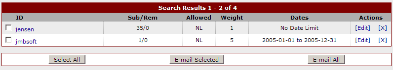

Introduction
AutoGallery SQL allows you to create any number of partner accounts, each with it's own options. With the partner accounts you can restrict who submits
galleries or have the galleries submitted through these accounts appear above the standard gallery submissions.
Adding
To add a partner account click on the Add Account link in the Partner Accounts section of the control panel menu. AutoGallery SQL will load a page
where you will be able to enter the necessary information to create an account. Each of the fields on that page is described below.
Account ID - This is the account identifier that will be used when submitting galleries.
Password - This is the password that will be used when submitting galleries.
E-mail - This is the partner's e-mail address.
No E-mail/Send E-mail - Select Send E-mail from the drop down box to send a welcome e-mail to the new account.
Weight - This is the weight that will be assigned to galleries submitted through this account.
Galleries Per Day - This is the maximum number of galleries that this account can submit per day.
Auto-Approve - If you set this to yes, this account's galleries will be automatically approved by AutoGallery SQL, otherwise
you will have to review them before they are approved.
Recip Required - If you set this to yes, any galleries submitted from this account must have a reciprocal link.
This value overrides the global options setting.
Check Blacklist - If this is set to yes, galleries submitted through this account will be checked against the blacklist. Set this to No if you do not want
galleries submitted through this account to be checked against the blacklist.
Check Banned HTML - If this is set to yes, galleries submitted through this account will be checked against the banned HTML list. Set this to No if you do not want
galleries submitted through this account to be checked against the banned HTML list.
Confirm By E-mail - If this option is set to yes, this partner will need to confirm all of their submissions by e-mail. If it is set to no, they will not have
to confirm their submissions by e-mail.
Once all of the options have been filled in how you want them, press the Add Account button. The new account will be created and you will
be returned to the Add Account page where you can create more accounts if you wish. Immediately after addition the new partner account will
be active and the user can begin submitting galleries.
Managing
To manage your partner accounts click on the Manage Accounts link in the Partner Accounts section of the control panel menu. AutoGallery SQL will load
a page where you will be able to view, search, edit, and delete your partner accounts. This image shows what you will see when managing your partner
accounts:

Here are the descriptions for each column in the screenshot above:
ID - This is the account username. Click on the username to send an e-mail to this partner using your normal e-mail program
Sub/Rem - This shows the number of galleries submitted followed by the number of galleries removed
Allowed - This shows the number of galleries the account is allowed to submit per day, or NL for no limit
Weight - This shows the weight that will be assigned to all galeries submitted by this account
Dates - This shows the date range that this account is allowed to submit galleries during
Actions - Click on [Edit] to edit the account information or [X] to delete the account
If you would like to e-mail one or more of the partner accounts, put a check in the box next to the Account ID. You can then press the
E-mail Selected button to bring up AutoGallery SQL's e-mail interface. To e-mail all of the partner accounts, press the E-mail All button.
Updating
To edit a partner account click on it's [Edit] link. A window will pop-up with the account editing interface. You can make any changes to the
acount that you wish. Once you are completed making the changes you want, press the Update Account button. AutoGallery SQL will update the account with the
new information and display a confirmation message in the pop-up window. You can close the pop-up window and continue with your next task.
Deleting
To delete a partner account click on it's [X] link. AutoGallery SQL will ask for confirmation that you want to delete the account. Pressing Ok will
delete the partner account, and the username and password for that account will no longer be active. Deleting a partner account will also delete
all of the galleries in the database that were submitted by the account.
Partner End-User Interface
The partner account end-user interface allows your partners to login and view the galleries they currently have in your database, the number of clicks each
gallery has received, disable their galleries if needed, and edit their account. To allow your partners to view that information and edit their account you
will need to provide a link to partner.cgi?r=login From that page partners will be able enter their current username and password and then be presented with
a page where they can see their galleries and edit their account.